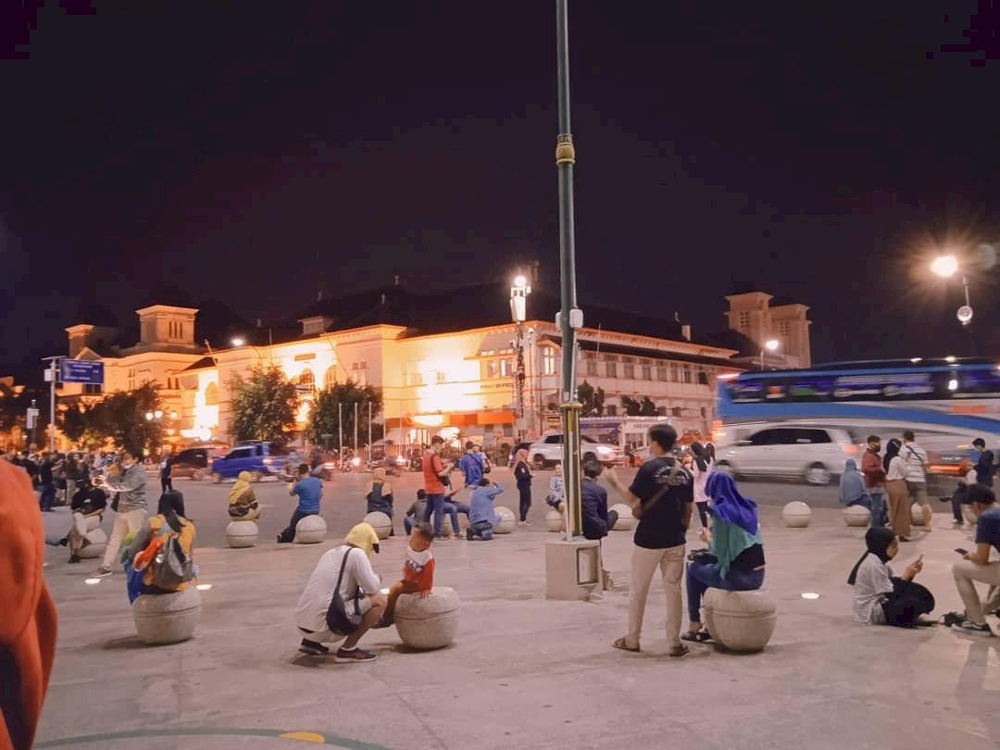
WAJIB MAMPIR
01
Titik Nol Kilometer
Salah satu spot ikonik Jogja yang cocok buat nongkrong, foto, dan menikmati suasana malam.
Lihat lokasiLampu kota, suara musik jalanan, aroma kuliner, dan vibes Jogja yang susah dijelasin kalau belum ngerasain sendiri.
Kalau ke Jogja tapi belum mampir Malioboro, rasanya kayak makan mie ayam tapi lupa kasih kuah. Ada yang kurang.
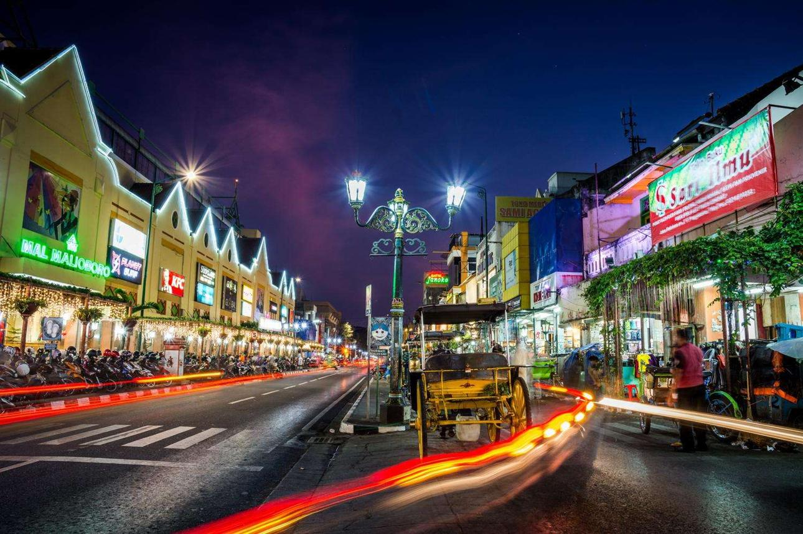
Malioboro itu bukan sekadar tempat buat foto. Di sini lo bisa jalan santai, jajan, cari oleh-oleh, nongkrong, dengerin musik jalanan, sampai sekadar duduk sambil ngeliatin orang lalu-lalang.
Justru pas malam hari suasananya makin dapet. Lampu kota mulai nyala, jalan makin rame, dan Jogja terasa punya cerita sendiri.
Batik, souvenir, kaos Jogja, sampai oleh-oleh.
Dari angkringan sampai makanan khas Jogja.
Musik jalanan, seni, dan suasana khas Jogja.
Siang udah seru. Tapi malam? Nah, ini baru waktunya keluar dan cari cerita.
Lampu jalan dan bangunan bikin suasana Malioboro makin cakep buat jalan santai maupun foto-foto.
Malam bikin suasana jadi lebih rame. Musik jalanan, wisatawan, pedagang, semuanya bercampur jadi satu.
Cahaya malam + jalanan Jogja = kombinasi yang susah gagal buat foto.
Nggak perlu itinerary ribet. Datang, jalan, lihat-lihat, terus nikmatin aja.
Jalan pelan sambil menikmati suasana Malioboro tanpa harus buru-buru.
FREECari batik, kaos, gantungan kunci, souvenir, dan berbagai barang khas Jogja.
SHOPPINGLaper setelah jalan? Tinggal cari makanan dan jajan yang lewat di depan mata.
FOODCari spot lampu kota, jalanan, bangunan, atau pose random yang penting estetik.
PHOTOAda beberapa tempat yang bisa lo sambungin sekalian dalam satu perjalanan.

WAJIB MAMPIRSalah satu spot ikonik Jogja yang cocok buat nongkrong, foto, dan menikmati suasana malam.
Lihat lokasi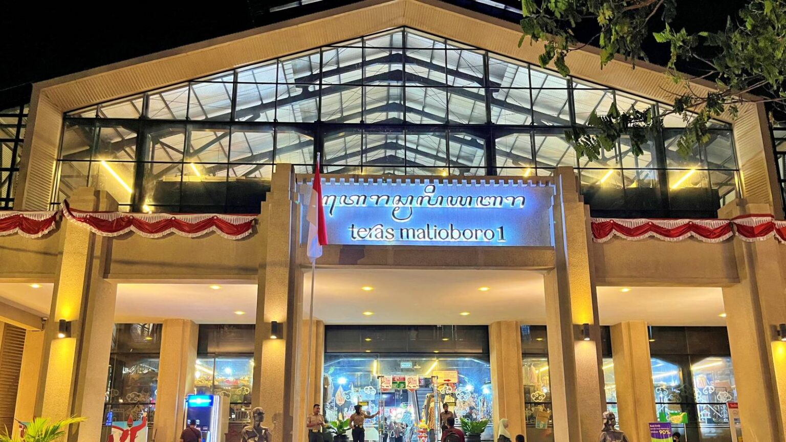
SHOPPINGTempat berburu berbagai barang dan oleh-oleh khas Jogja sambil jalan-jalan.
Cek budget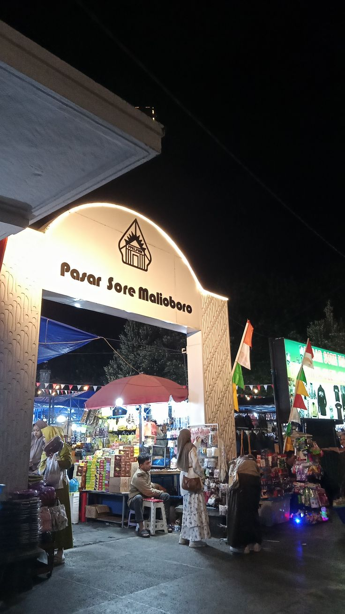
KULINER & BELANJABisa jadi salah satu tujuan buat cari barang khas Jogja dan menikmati area sekitarnya.
Lihat galeriCocok buat yang baru pertama kali main ke Malioboro dan pengen dapet banyak pengalaman dalam satu malam.
Datang lebih awal, cari parkir, terus mulai jalan santai.
Saat matahari mulai turun, waktunya foto-foto dan lihat suasana sekitar.
Isi energi dulu sebelum lanjut muter-muter.
Lanjut keliling, cari spot foto, dan nikmati keramaian malam.
Nikmati suasana malam dan cari spot yang enak buat duduk atau foto.
Kalau masih ada tenaga dan budget, waktunya cari buah tangan buat dibawa pulang.
Tinggal sesuaikan sama isi dompet. Mau hemat bisa, mau agak royal juga gas.
Buat yang prinsipnya: yang penting jalan dulu.
Buat yang pengen jalan santai tanpa terlalu mikirin pengeluaran.
Buat yang nggak mau terlalu mikirin budget. Makan, jajan, belanja, gas.
Jalan jauh tanpa makan itu namanya menyiksa diri. Mending sekalian kulineran.
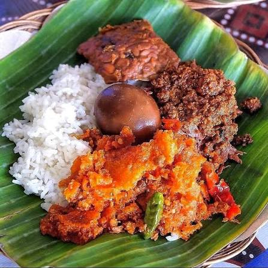
KHAS JOGJABelum lengkap ke Jogja kalau belum nyobain salah satu makanan khasnya.
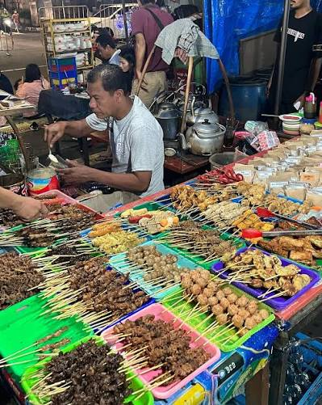
FAVORITNongkrong santai, makan sederhana, ngobrol lama. Vibes Jogja banget.
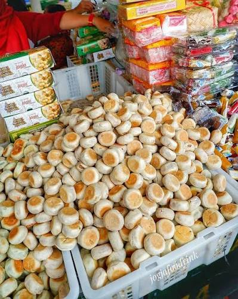
JAJANBuat yang suka ngemil sambil jalan, pilihan jajanan di sekitar area wisata cukup beragam.
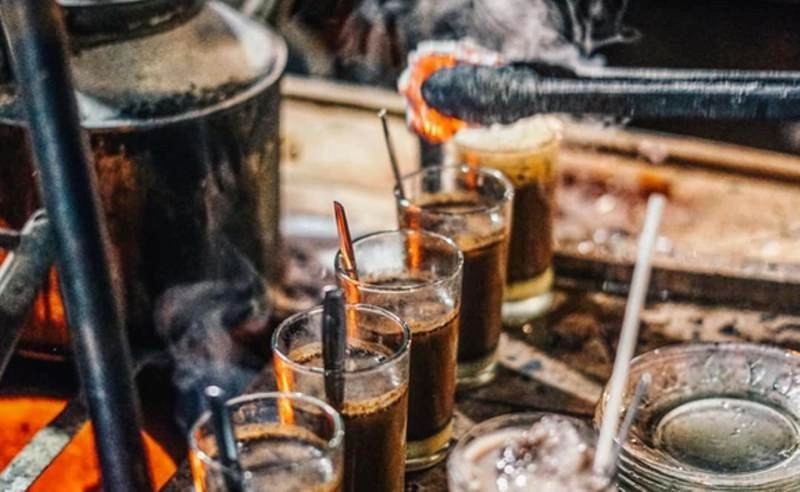
MALAMSetelah muter-muter, duduk sebentar sambil minum yang hangat juga enak.
Biar jalan-jalannya lebih nyaman dan nggak ada drama.
Beberapa transaksi kecil akan lebih praktis kalau lo punya uang tunai.
Lo bakal banyak jalan. Jangan sampai baru setengah jalan udah minta pijit.
Foto-foto, buka maps, chat temen, semuanya butuh baterai.
Tetap simpan barang berharga dengan aman selama jalan-jalan.
Klik fotonya kalau mau lihat lebih besar.
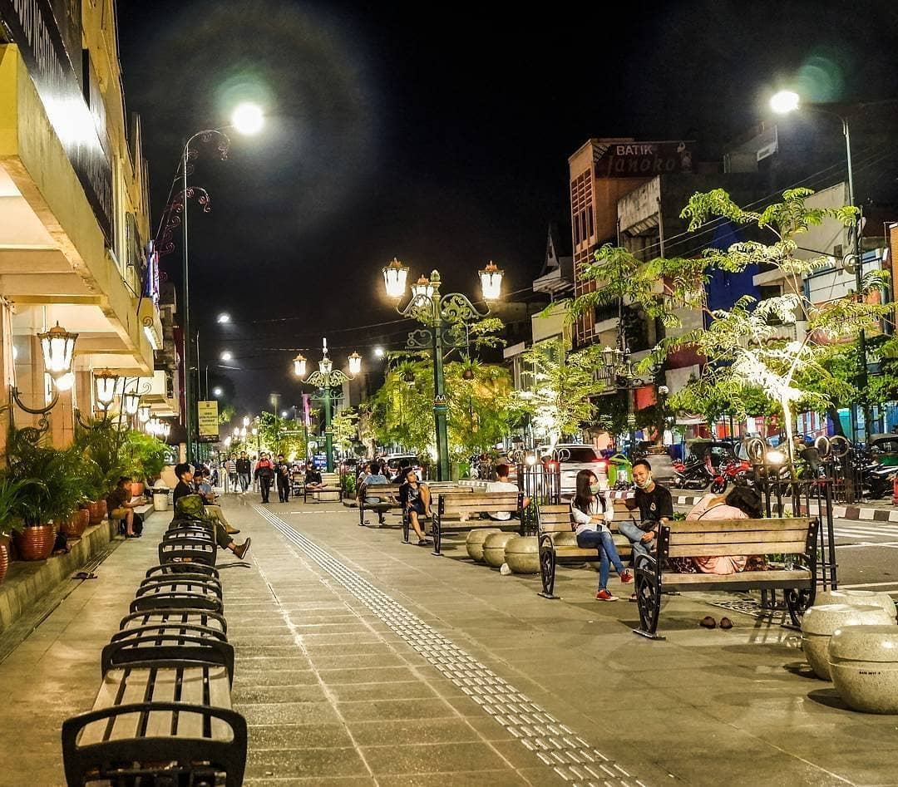
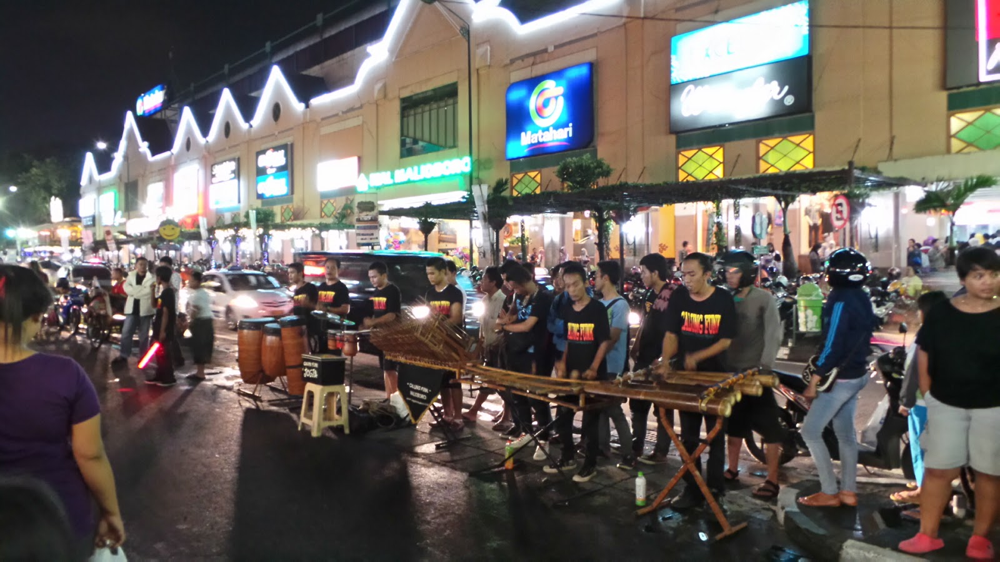
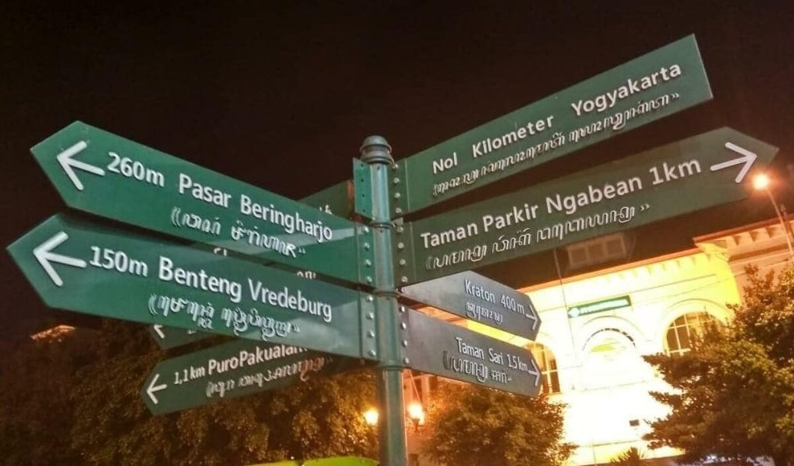
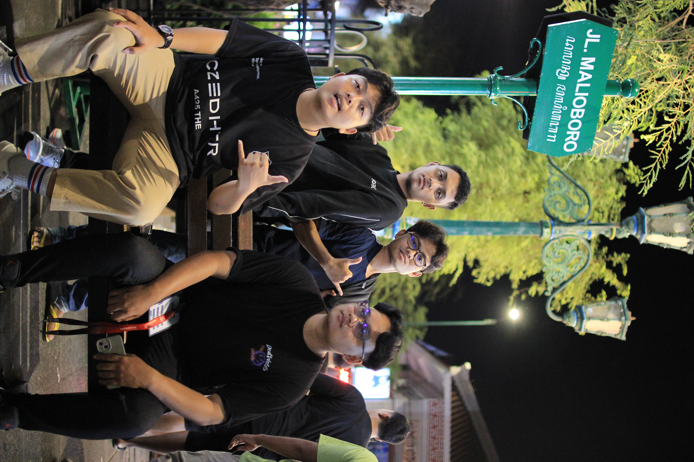
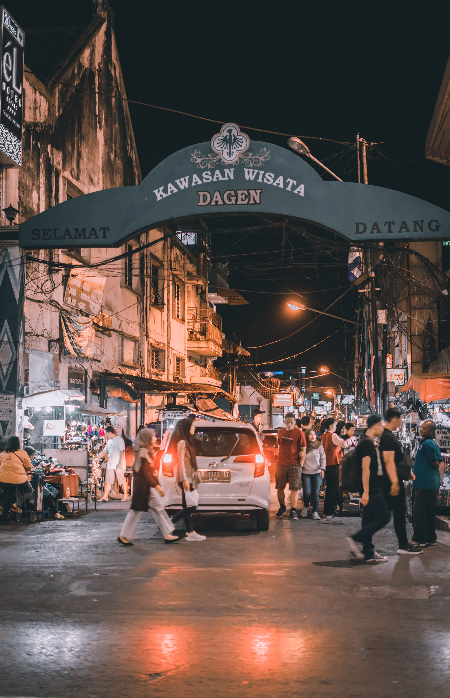
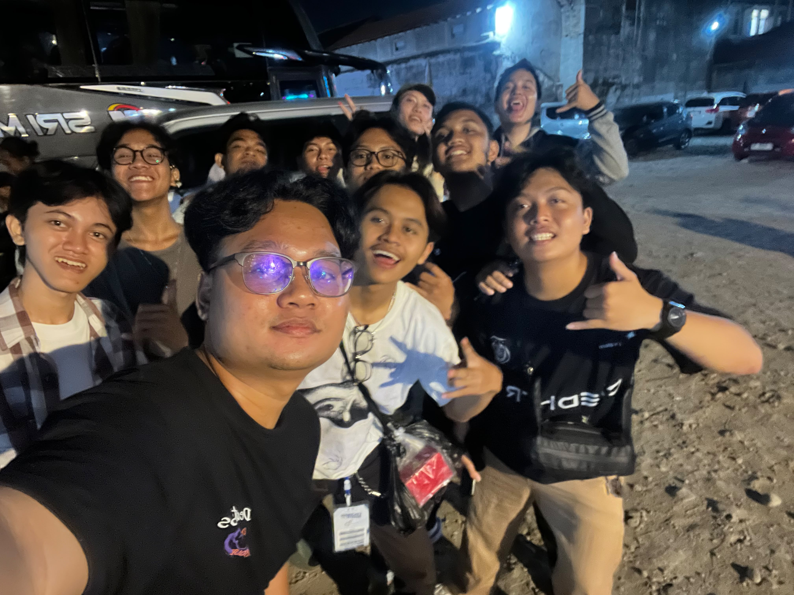
Kalau masih belum kebayang vibes-nya, langsung aja lihat videonya.
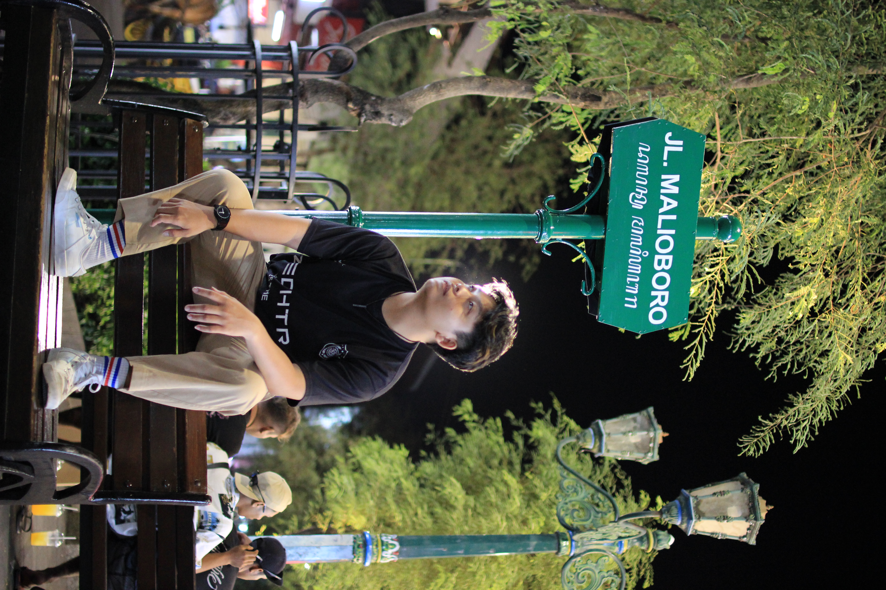
Website ini dibuat sebagai media promosi digital untuk memperkenalkan suasana Malioboro, terutama saat malam hari.
Tujuannya simpel: bikin orang yang belum pernah ke sini jadi penasaran dan akhirnya bilang, “Yaudah, kapan berangkat?”
Beberapa pertanyaan yang biasanya muncul sebelum jalan.
Pusat kawasan wisata Malioboro, Yogyakarta, Daerah Istimewa Yogyakarta.
Jangan cuma masukin Malioboro ke wishlist. Sesekali datengin juga.